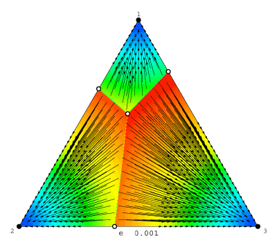

What's going on here?
Consider a large population of agents who are recurrently randomly matched to play this three-strategy coordination game:
| 1, 1 | 0, 0 | 0, 0 |
|---|---|---|
| 0, 0 | 2, 2 | 0, 0 |
| 0, 0 | 0, 0 | 3, 3 |
As time passes, agents revise their choices according to the following protocol: in each (short) time period, one agent is chosen at random and given the opportunity to switch strategies. This agent decides which strategy to play next using the logit choice rule with noise level η > 0. This means that when the strategies' expected payoffs are (π[1], π[2], π[3]), the revising agent chooses strategy i with probability proportional to exp(π[i]/η).
Over finite time spans, the aggregate behavior induced by this revision protocol can be described by an ordinary differential equation called the logit dynamic (see, e.g., Hofbauer and Sandholm (2005)). Rest points of this dynamic are called logit equilibria.
Each frame in the movie is a phase diagram for the logit dynamic for some fixed noise level η. Stable rest points are drawn in black, and unstable ones in white; solution trajectories appear as arrows; and background colors represent speed of motion: blue is slowest, red is fastest.
The movie as a whole shows how the logit dynamic changes as we vary η. At low noise levels, the dynamic is very nearly Gilboa and Matsui's (1991) best response dynamic: within each basin of attraction, motion is almost directly toward a rest point approximating the relevant pure equilibrium. As the noise level increases from ≈0 to 1, the phase diagram changes dramatically: for instance, the number of rest points begins at 7, soon drops to 5 (at η ≈ .22), then to 3 (at η ≈ .28), and finally to 1 (at η ≈ .68). As the noise level is increased further, agents' choices become essentially random, driving the lone rest point to the center of the simplex. (For some perspective on these numbers: logit choice can be derived from a model in which each strategy's payoff is randomly perturbed; a noise level of η corresponds to a standard deviation of only ≈1.28 η. Thus, payoff shocks with a standard deviation of just .87 are enough to kill off all but one of the rest points!)
In the experimental literature, rest points of the logit dynamic are often called quantal response equilibria (QRE). McKelvey and Palfrey (1995) note that the QRE is unique when η is large, and that if we reduce η continuously, this QRE moves continuously as well. Thus, taking the limit of these QRE as η approaches zero defines an equilibrium selection device.
Now look again at the logit movie. Wait until the noise level reaches its maximum, so that the logit equilibrium is unique, and then follow the path that this equilibrium takes as the noise level drops. As you can see, McKelvey and Palfrey's method selects the (3, 3) equilibrium in this game.